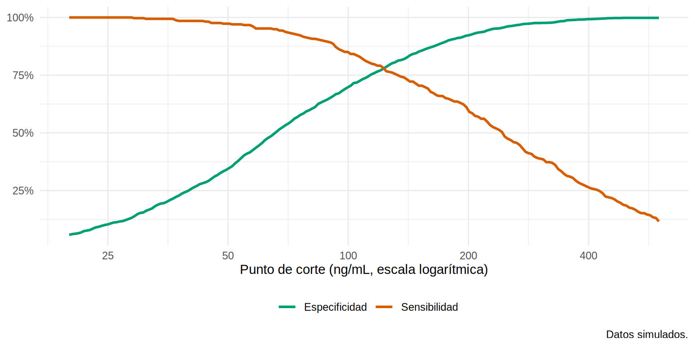
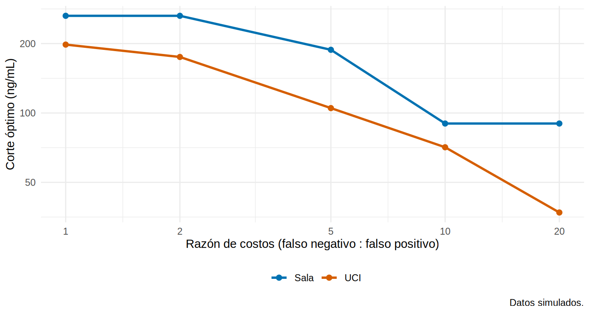
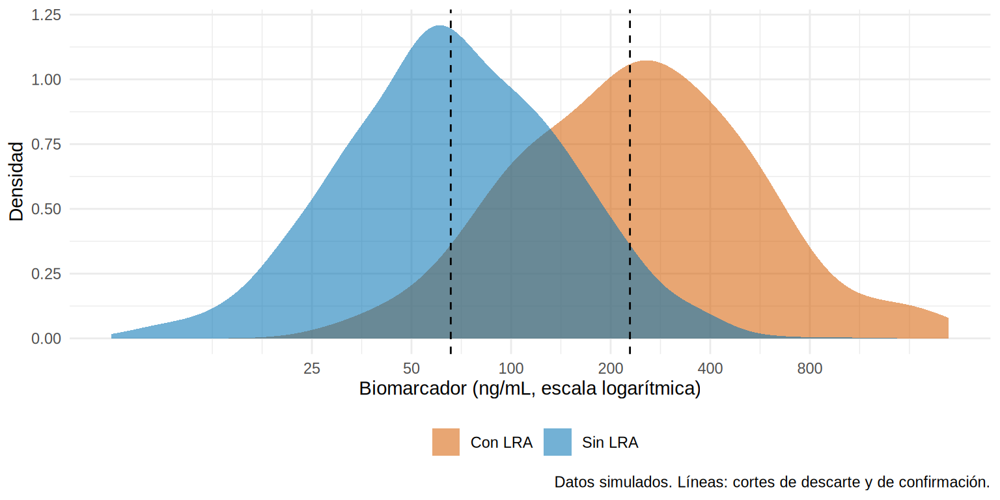

El punto de corte: no hay uno “correcto”, hay uno que sirve para algo
La UCI quiere un protocolo: si el biomarcador urinario es alto al ingreso, se activa un “paquete KDIGO” (suspender nefrotóxicos, optimizar volemia, vigilar diuresis horaria y creatinina). El jefe pregunta: “¿a partir de qué valor lo activamos?”. Tú sabes que subir el corte evita activar el paquete en pacientes que no lo necesitan, pero deja pasar a algunos que sí. ¿Cómo decides?
Elegir un punto de corte no es un problema puramente estadístico: es una decisión sobre qué error duele más. La estadística ayuda a hacer visible el trade-off y a no engañarte con un corte que solo funciona en tu muestra.
Lo que vamos a hacer
- Ver el trade-off sensibilidad-especificidad y calcular el corte de Youden.
- Elegir el corte según costos (qué pesa más: el falso negativo o el falso positivo) y según la prevalencia.
- Fijar una sensibilidad o una especificidad y definir una zona gris con dos cortes.
- Comprobar que un corte elegido en la misma muestra es optimista, y cómo validarlo.
Paso 1. El trade-off a la vista
Calculamos sensibilidad y especificidad en una rejilla de cortes (espaciada en escala logarítmica, porque el biomarcador es asimétrico) y las dibujamos juntas:
rejilla <- exp(seq(log(20), log(600), length.out = 200))
curvas <- metricas_corte(dx$ngal, dx$lra, rejilla)
curvas |>
select(corte, Sensibilidad = sens, Especificidad = esp) |>
pivot_longer(-corte, names_to = "medida", values_to = "valor") |>
ggplot(aes(corte, valor, colour = medida)) +
geom_line(linewidth = 1) +
scale_x_log10(breaks = c(25, 50, 100, 200, 400)) +
scale_y_continuous(labels = scales::percent) +
scale_colour_manual(values = c("#009E73", "#D55E00")) +
labs(x = "Punto de corte (ng/mL, escala logarítmica)", y = NULL, colour = NULL, caption = "Datos simulados.") +
theme_minimal(base_size = 11) + theme(legend.position = "bottom")
Qué vemos: las dos curvas se cruzan, pero ese cruce no es “el” corte óptimo; solo es el punto donde las dos medidas valen lo mismo. Cualquier punto de la curva es una decisión posible.
Paso 2. El corte de Youden
El índice de Youden es \(J = \text{sensibilidad} + \text{especificidad} - 1\): la distancia vertical entre la curva ROC y la diagonal. El corte de Youden es el que maximiza \(J\). Es el criterio más usado por defecto.
k_youden <- corte_youden(dx$ngal, dx$lra) # nuestra función (rápida)
sens_esp(dx$ngal, dx$lra, k_youden) sens esp
0.7611940 0.8048048 threshold sensitivity specificity
1 130.3 0.761194 0.8048048Qué vemos: el corte de Youden es de 130 ng/mL, con sensibilidad 76.1 % y especificidad 80.5 %. Los dos métodos coinciden (pROC informa un punto entre dos valores observados consecutivos).
Un criterio parecido es el del punto más cercano a la esquina superior izquierda (best.method = "closest.topleft"). Ambos tratan por igual los dos tipos de error y no tienen en cuenta la prevalencia, lo que es una limitación importante en la práctica.
Paso 3. Elegir según el costo de equivocarse
Pensemos en costos relativos. Un falso positivo (activar el paquete en alguien que no desarrollará LRA) cuesta algo: exámenes, retraso de un fármaco útil. Un falso negativo (no activarlo y que la LRA ocurra) cuesta más. Si ponemos un falso positivo como 1 unidad y un falso negativo como razon unidades, el costo esperado por paciente de un corte es:
\[ \text{costo} = \frac{\text{FP} \times 1 + \text{FN} \times \text{razón}}{n} \]
Buscamos el corte que lo minimiza. Como depende de cuántos FP y FN hay, depende de la prevalencia. Lo calculamos por separado para la UCI (prevalencia alta) y la sala (baja), con distintas razones:
razones <- c(1, 2, 5, 10, 20)
optimo_por_costo <- function(d, razon) {
cc <- coste_corte(d$ngal, d$lra, rejilla, razon)
k <- cc$corte[which.min(cc$coste)]
tibble(razon_FN_FP = razon, corte_optimo = round(k), sens = sens_esp(d$ngal, d$lra, k)[["sens"]], esp = sens_esp(d$ngal, d$lra, k)[["esp"]])
}
costos <- dx |>
group_by(entorno) |>
group_modify(\(d, k) map_dfr(razones, \(r) optimo_por_costo(d, r)))
costos |> mutate(across(c(sens, esp), \(x) round(x, 3)))# A tibble: 10 × 5
# Groups: entorno [2]
entorno razon_FN_FP corte_optimo sens esp
<chr> <dbl> <dbl> <dbl> <dbl>
1 Sala 1 264 0.4 0.981
2 Sala 2 264 0.4 0.981
3 Sala 5 188 0.564 0.929
4 Sala 10 90 0.871 0.683
5 Sala 20 90 0.871 0.683
6 UCI 1 198 0.662 0.877
7 UCI 2 175 0.713 0.848
8 UCI 5 105 0.882 0.652
9 UCI 10 71 0.954 0.46
10 UCI 20 37 0.995 0.159ggplot(costos, aes(razon_FN_FP, corte_optimo, colour = entorno)) +
geom_line(linewidth = 1) + geom_point(size = 2) +
scale_x_log10(breaks = razones) + scale_y_log10(breaks = c(50, 100, 200, 400)) +
scale_colour_manual(values = c("Sala" = "#0072B2", "UCI" = "#D55E00")) +
labs(x = "Razón de costos (falso negativo : falso positivo)", y = "Corte óptimo (ng/mL)", colour = NULL, caption = "Datos simulados.") +
theme_minimal(base_size = 11) + theme(legend.position = "bottom")
Qué vemos: cuanto más grave sea perder un caso, más bajo el corte óptimo (más sensibilidad, a costa de más falsos positivos). Y para la misma razón de costos, el corte óptimo es más bajo en la UCI que en sala: con razón 5, 105 ng/mL en UCI frente a 188 ng/mL en sala. Donde la LRA es más frecuente hay más casos que perder, y por eso conviene un corte más bajo. Un único corte para toda la clínica puede no ser el mejor para cada servicio.
pROC
coords(r, "best", best.method = "youden", best.weights = c(razon, prevalencia)) hace la misma optimización: el primer valor es el costo relativo del falso negativo frente al falso positivo y el segundo, la prevalencia. Con razón 5 devuelve (salvo el redondeo a puntos medios) los mismos cortes: 106 en UCI y 189 en sala.
Paso 4. Fijar la sensibilidad (o la especificidad)
A veces no hay costos numéricos, pero sí un objetivo: “no quiero perder más del 5 % de las LRA”, es decir, sensibilidad ≥ 95 %. Es una regla de descarte: un negativo debería tranquilizar. El corte sale directamente de los casos: es el percentil 5 del biomarcador entre los pacientes con LRA.
k_descarte <- unname(quantile(dx$ngal[dx$lra == 1], 0.05)) # deja fuera al 5 % de los casos
k_confirma <- unname(quantile(dx$ngal[dx$lra == 0], 0.95)) # deja por encima solo al 5 % de los no casos
rbind(`Regla de descarte (sens 95 %)` = c(corte = k_descarte, sens_esp(dx$ngal, dx$lra, k_descarte)),
`Regla de confirmación (esp 95 %)` = c(corte = k_confirma, sens_esp(dx$ngal, dx$lra, k_confirma))) |>
round(3) corte sens esp
Regla de descarte (sens 95 %) 65.72 0.949 0.503
Regla de confirmación (esp 95 %) 228.76 0.528 0.950Qué vemos: para no perder más del 5 % de los casos hay que bajar el corte a 66 ng/mL, y la especificidad cae a 50 %. En cambio, para casi no equivocarse con los positivos (especificidad 95 %), el corte sube a 229 ng/mL y la sensibilidad baja a 53 %. Ningún corte hace las dos cosas a la vez.
Paso 5. La zona gris: dos cortes en lugar de uno
Si ya sabemos que un corte bajo “descarta” y uno alto “confirma”, ¿por qué obligar a todos a caer en positivo o negativo? Con dos cortes se obtienen tres zonas: negativo (por debajo del corte de descarte), positivo (por encima del de confirmación) y una zona gris en el medio, donde la prueba no basta y se necesita más información (clínica, repetir la prueba, otro marcador).
dx <- dx |>
mutate(zona = cut(ngal, c(-Inf, k_descarte, k_confirma, Inf), right = FALSE,
labels = c("Negativo", "Zona gris", "Positivo")),
estado = if_else(lra == 1, "Con LRA", "Sin LRA"))
ggplot(dx, aes(ngal, fill = estado)) +
geom_density(alpha = 0.55, colour = NA, adjust = 1.2) +
geom_vline(xintercept = c(k_descarte, k_confirma), linetype = 2) +
scale_x_log10(breaks = c(25, 50, 100, 200, 400, 800)) +
scale_fill_manual(values = c("Con LRA" = "#D55E00", "Sin LRA" = "#0072B2")) +
labs(x = "Biomarcador (ng/mL, escala logarítmica)", y = "Densidad", fill = NULL, caption = "Datos simulados. Líneas: cortes de descarte y de confirmación.") +
theme_minimal(base_size = 11) + theme(legend.position = "bottom")
Veamos qué pasa con los pacientes en cada zona: cuántos son, qué riesgo real tienen y cuánto cambia la probabilidad (razón de verosimilitud por estratos, que se calcula con la proporción de casos y de no casos que cae en cada zona):
zonas <- dx |>
group_by(zona) |>
summarise(n = n(), casos = sum(lra), riesgo_de_LRA = mean(lra), .groups = "drop") |>
mutate(pct_pacientes = n / sum(n))
rv_zonas <- dx |> count(zona, lra) |> group_by(lra) |> mutate(p = n / sum(n)) |> ungroup() |>
select(zona, lra, p) |> pivot_wider(names_from = lra, values_from = p, names_prefix = "p_") |>
mutate(RV = p_1 / p_0) |> select(zona, RV)
left_join(zonas, rv_zonas, by = "zona") |> mutate(across(where(is.numeric), \(x) round(x, 3)))# A tibble: 3 × 6
zona n casos riesgo_de_LRA pct_pacientes RV
<fct> <dbl> <dbl> <dbl> <dbl> <dbl>
1 Negativo 855 17 0.02 0.428 0.101
2 Zona gris 884 141 0.16 0.442 0.943
3 Positivo 261 177 0.678 0.13 10.5 Qué vemos: la zona negativa reúne a 43 % de los pacientes y su riesgo de LRA es de solo 2.0 % (RV = 0.1): casi se puede descartar. La zona positiva reúne a 13 % con un riesgo de 68 % (RV = 10.5): hay que actuar. Pero la zona gris concentra a 44 % de los pacientes (141 de los 335 casos están ahí) con un riesgo de 16 %: en esa zona el biomarcador no decide. Ese es el precio de ser honestos: forzar a esos pacientes a “positivo” o “negativo” solo esconde la incertidumbre. Esa zona se resuelve con más información: el modelo multivariable (16.4) y el juicio clínico.
Paso 6. Un corte elegido en tu muestra es optimista
Hay una trampa clásica: se elige el corte de Youden en la misma muestra en que luego se informan la sensibilidad y la especificidad. Como el corte se “ajusta” al ruido de la muestra, el rendimiento sale mejor de lo que será en pacientes nuevos. El efecto es grande cuando la muestra es pequeña. Lo comprobamos con un experimento: tomamos 300 muestras de 150 pacientes, elegimos el corte de Youden en cada una y medimos su rendimiento (a) en la propia muestra (aparente) y (b) en los demás pacientes del conjunto (nuestra “realidad”). Además estimamos el rendimiento con dos métodos de validación que sí se pueden usar en la práctica: el bootstrap de optimismo y la validación cruzada de 10 particiones (corte buscado sin el fold de prueba).
set.seed(163)
j_de <- \(x, y, k) sum(sens_esp(x, y, k)) - 1 # J de Youden de la regla "x >= k"
experimento <- map_dfr(1:300, \(b) {
i <- sample(nrow(dx), 150); m <- dx[i, ]; resto <- dx[-i, ]
k <- corte_youden(m$ngal, m$lra)
aparente <- j_de(m$ngal, m$lra, k)
## Bootstrap de optimismo: corte en la remuestra, evaluado en la remuestra y en la muestra original
opt <- mean(replicate(50, {
mb <- m[sample(150, replace = TRUE), ]; kb <- corte_youden(mb$ngal, mb$lra)
j_de(mb$ngal, mb$lra, kb) - j_de(m$ngal, m$lra, kb)
}))
cv <- corte_youden_cv(m$ngal, m$lra, K = 10, semilla = b)
tibble(corte = k, aparente = aparente, bootstrap = aparente - opt, cv_10_folds = cv$sens + cv$esp - 1,
realidad = j_de(resto$ngal, resto$lra, k))
})
resumen_exp <- experimento |> summarise(across(c(aparente, bootstrap, cv_10_folds, realidad), mean))
resumen_exp |> mutate(across(everything(), \(x) round(x, 3)))# A tibble: 1 × 4
aparente bootstrap cv_10_folds realidad
<dbl> <dbl> <dbl> <dbl>
1 0.631 0.571 0.536 0.54 5% 50% 95%
86 134 203 Qué vemos: el índice de Youden aparente es en promedio de 0.63, pero en pacientes nuevos es de solo 0.54: un optimismo de 0.09. El bootstrap corrige una parte (0.57) y la validación cruzada acierta casi por completo (0.54). Además, el corte cambia mucho de una muestra a otra: el 90 % central de los cortes elegidos va de 86 a 203 ng/mL. Con las 2 000 observaciones el corte de Youden es mucho más estable; para ver cuánto, calculamos un IC por bootstrap:
2.5% 50% 97.5%
90 132 189 El corte de Youden con todos los pacientes (130 ng/mL) tiene un IC bootstrap de 90 a 189 ng/mL: aun con 2 000 pacientes el “corte óptimo” es una región, no un número. Eso refuerza la idea de la zona gris.
- Elegir el corte “óptimo” y reportar su sensibilidad y especificidad en los mismos datos infla el rendimiento (Leeflang et al., 2008). Valida con bootstrap, con validación cruzada, o en una muestra independiente.
- Dicotomizar pierde información. Un paciente con 105 y otro con 95 ng/mL son casi idénticos y quedan en lados opuestos. Si vas a usar el marcador junto a otros datos, deja que entre continuo al modelo (16.4).
- Un corte publicado en otro hospital no se traslada solo: depende del kit, del espectro y de la prevalencia.
- Cada punto de corte es un intercambio entre sensibilidad y especificidad; elegir uno es una decisión clínica sobre qué error es más costoso.
- Youden (máx. sens + esp − 1) es un buen punto de partida, pero trata igual ambos errores y ignora la prevalencia.
- Con costos explícitos el corte óptimo baja cuando el falso negativo duele más y varía con la prevalencia (UCI vs. sala).
- Fija una sensibilidad (regla de descarte) o una especificidad (regla de confirmación) y usa dos cortes para definir una zona gris honesta.
- El corte elegido y evaluado en la misma muestra es optimista: valida con bootstrap o validación cruzada, y reporta su incertidumbre.
Ejercicio
- Calcula el corte de Youden por separado en pacientes con y sin sepsis. ¿Es el mismo? ¿Qué te dice sobre usar un único corte?
- Define la zona gris con sensibilidad del 90 % y especificidad del 90 % (en lugar de 95 %). ¿Qué porcentaje de pacientes cae ahora en la zona gris?
- Repite el experimento del Paso 6 con muestras de 400 pacientes en lugar de 150. ¿Cuánto baja el optimismo?